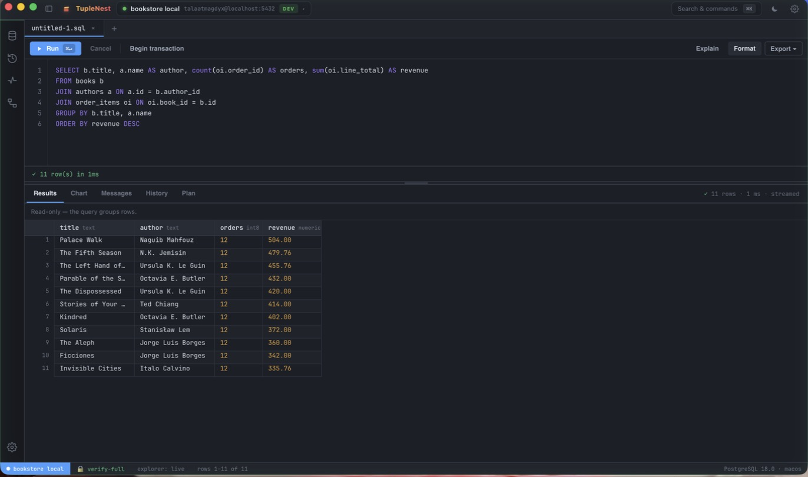
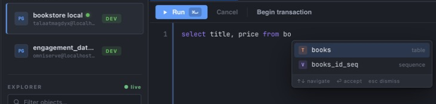
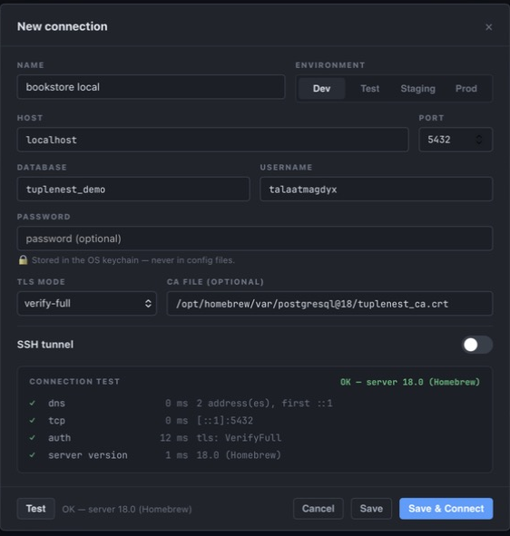
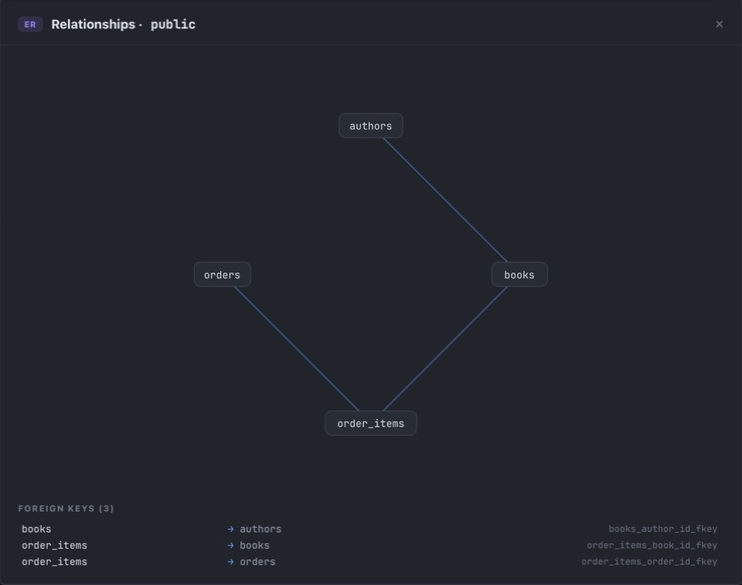
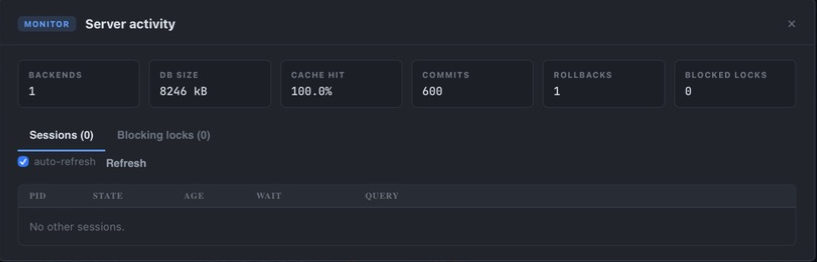
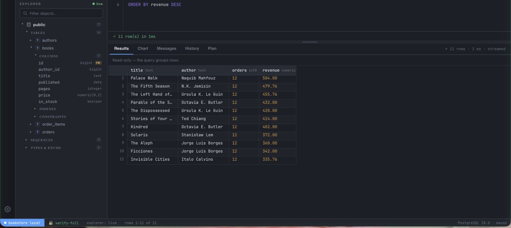

A local-first, open-source PostgreSQL IDE built for engineers who work with real data and take production safety seriously.

Public beta. Real engineers are using it, but nobody has lived with it for years yet. macOS builds are not notarized and Windows installers are unsigned, so first launch needs one extra click — every release is signed and checksummed so you can verify the bytes yourself.
The app talks to your database and nothing else. No backend of ours sits in the middle.
Read-only mode uses a real Postgres session characteristic — the server refuses writes, not just the UI.
Passwords live in the macOS Keychain, Windows Credential Manager, or the Secret Service — never in a config file.
Every build ships with a minisign signature, SHA-256 checksums, an SBOM, and GitHub build provenance.
No analytics SDK, no phone-home, no crash upload. Even a pasted query plan is analysed locally, never uploaded.
A Rust core over the PostgreSQL wire protocol, in a Tauri shell. Streaming, bounded memory, fast start.
Built around the workflows PostgreSQL engineers use every day: writing queries, exploring schemas, inspecting production data, and avoiding expensive mistakes.
No invented adoption numbers. These are things you can verify in the repository or a release.
A focused PostgreSQL environment — not a database administration suite trying to do everything for every engine.





Five steps, one window — the loop a PostgreSQL engineer actually runs all day.
Connections are classified as development, staging, or production, and production connections are visually distinct — you always know where a query is about to run.
Schema-aware completion for tables, columns, and functions; PostgreSQL-correct literal masking (dollar-quoting, nested comments) so the destructive-statement guard reads the real query, not raw text.
Rows stream from a bounded store and render through a virtualized grid, so a wide or long result stays responsive instead of freezing the window.
A lazy schema tree plus an ER diagram built from real foreign keys. Follow relationships, inspect indexes and constraints, and jump straight into the editor.
Security is the foundation, not a feature bolt-on. Here's the short version — the full model is on the Security page.
No backend of ours between you and your database.
No analytics, no phone-home, no crash upload.
Passwords never touch a config file.
verify-full requires TLS and checks the hostname.
Changed host keys are rejected, not silently trusted.
Artifacts are signed; the app refuses a downgrade below its floor.
MIT, public issues, public security policy.
Checksums, SBOM, and build provenance per release.
MIT-licensed, developed in the open, with the supply-chain controls you'd want from something touching production databases.
macOS, Windows, and Linux. Every asset is on the GitHub Releases page alongside its checksum and signature.
SHA256SUMS, a minisign signature, the minisign public key, an SBOM, and release notes. Full instructions on the Download page.Yes — free forever and MIT-licensed. No paid tier gates the core product, no account required.
Yes. The full source is on GitHub under the MIT license, with a public issue tracker and security policy.
No. There is no analytics SDK, no phone-home, and no crash upload. The only network destinations are the PostgreSQL host you connect to, an SSH host if you configure a tunnel, and the GitHub endpoint used to check for updates.
In your operating system's keychain — macOS Keychain, Windows Credential Manager, or the Linux Secret Service. The app database stores only an opaque reference, never the password itself, and the password is never returned to the WebView.
Yes, and it's designed for exactly that. Classify a connection as production, turn on read-only mode, and destructive statements require confirmation. For strict enforcement, connect with a database role that has no write privileges — that's the real boundary.
Yes, with host-key verification. A changed host key is rejected rather than silently trusted.
Modern PostgreSQL. Contract tests run against PostgreSQL 13, 15, and 17 in CI, with TLS enabled.
If the provider speaks the standard PostgreSQL wire protocol and accepts TLS and (optionally) SSH tunnels, it should work. TupleNest is a standard client.
Yes — all three, each built on its own runner and released together.
It's a focused alternative for PostgreSQL query and exploration work with a strong safety posture. It's not trying to be a full multi-engine administration suite — see the Roadmap for what's explicitly not planned.
Yes. You need Rust, Node, and the Tauri prerequisites for your platform. Steps are on the Download page.
Updates are served over HTTPS with signed artifacts and an embedded public key, and the app refuses an update advertised below a compiled-in minimum version. You can also verify any download by hand with the published checksum and signature.